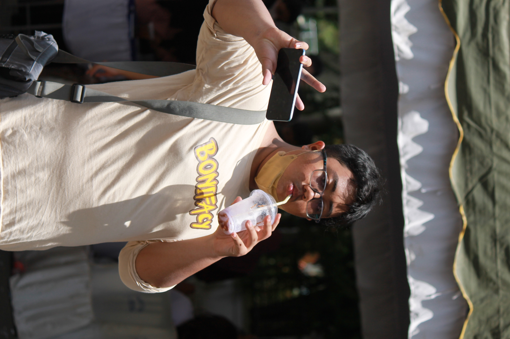
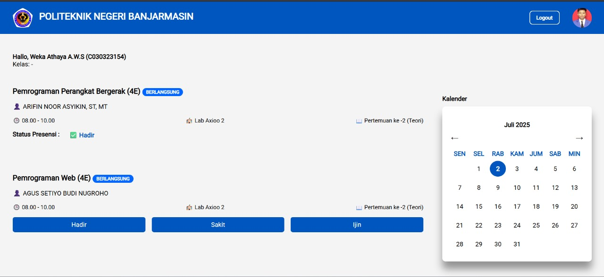
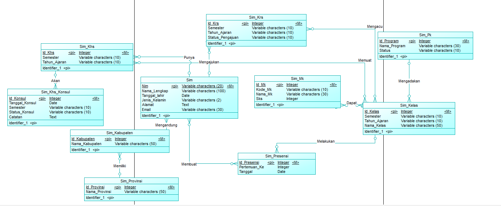

Ahmad Mubdi Lazuardi
Web Developer

Membangun solusi web yang fungsional, responsif, dan terstruktur dengan fokus pada pengembangan Frontend dan Backend.
Tentang Saya
Lulusan baru dari Program Studi D3 Teknik Informatika, Politeknik Negeri Banjarmasin dengan minat kuat dalam pengembangan web, terutama di bagian pengembangan antarmuka pengguna dan pengembangan sisi server.
Tertarik dalam pengembangan aplikasi web, mulai dari perancangan antarmuka yang responsif pada frontend, pengembangan logika dan fungsionalitas sistem pada backend, hingga pengelolaan database yang terstruktur dan efisien.
- Pendidikan Terakhir
- Diploma III — Program Studi Teknik Informatika
- Fokus
- Pengembangan Web, terutama Frontend & Backend Development
- Alat Utama
- Laravel, MySQL, Visual Studio Code, PHP, HTML, CSS, JavaScript
- Sedang Dikerjakan
- —
Pengalaman Magang
Web Developer Intern
Direktorat Bina Teknik Sumber Daya Air, Kementerian Pekerjaan Umum
Menjalani magang dengan fokus pada pengembangan web sesuai kebutuhan instansi.
- Merancang alur kerja sistem berdasarkan analisis kebutuhan pengguna serta umpan balik dari stakeholder
- Mengembangkan sistem menggunakan PHP dengan framework Laravel dan MySQL sebagai basis data
- Merancang dan mengimplementasikan database terintegrasi untuk mendukung pengelolaan data
Simbatra
Sistem Manajemen Data Laboratorium (Simbatra)
SIMBATRA (Sistem Manajemen Data Laboratorium Balai Teknik Rawa) adalah aplikasi berbasis web yang dirancang untuk mengintegrasikan pengelolaan data penelitian dan administrasi laboratorium dalam satu sistem terpusat, sehingga memudahkan proses pengelolaan, pencarian, pemantauan, dan akses data.
- Dashboard terintegrasi untuk memantau statistik data dan status permintaan layanan secara real-time.
- Notifikasi kalibrasi peralatan untuk menginformasikan peralatan yang belum dikalibrasi atau telah melewati masa berlaku kalibrasi.
- Modul tarif layanan tersentralisasi mengacu pada data resmi PMK 19/2024
- Dropdown bertingkat untuk seluruh kategori layanan resmi Balai Teknik Rawa
- Modul CRUD terpusat untuk pengelolaan personel, peralatan, SOP, dokumen, penelitian, laporan hasil, PNBP, dan literatur.
- Pengelolaan data penelitian terintegrasi dari pengajuan layanan hingga laporan hasil penelitian.
- Generator kwitansi PDF dengan cap "LUNAS" otomatis pada dokumen yang sudah diverifikasi
Simpadu
Sistem informasi akademik terpadu yang dikembangkan sebagai bagian dari Project Based Learning (PBL), mencakup pengelolaan data mahasiswa, KRS (Kartu Rencana Studi), KHS (Kartu Hasil Studi), kelas, mata kuliah, hingga presensi perkuliahan.
- Merancang struktur sistem database berdasarkan analisis serta umpan balik dari stakeholder
- Mengelola sistem database menggunakan SQL agar dapat sesuai dengan yang dibutuhkan sistem
- Membuat query SQL yang dibutuhkan untuk sistem
- Mengoptimalkan database agar tidak ada terjadinya duplikasi data

Dashboard Presensi & Jadwal
Skema ERD DatabasePelatihan & Sertifikasi
Bukti pembelajaran formal
Sertifikat Magang — Balai Teknik Rawa
Menyelesaikan program magang sebagai Web Developer Intern di Balai Teknik Rawa, Direktorat Bina Teknik Sumber Daya Air, Kementerian PU, periode 1 September – 31 Desember 2025.
TOEIC Listening & Reading — Skor 795
Official Score Report dari ETS/ITC dengan skor Listening 440 dan Reading 355 (total 795 dari 990), melalui Politeknik Negeri Banjarmasin. Berlaku hingga Juni 2028.
Junior Fullstack Microservices Developer (Laravel & Docker)
Menyelesaikan pelatihan intensif 55 jam dari ArutalaLab, mencakup arsitektur Laravel, REST API, autentikasi, hingga containerization dengan Docker & Docker Compose. Lulus dengan skor kompetensi 81/100.
Junior Mobile Programmer
Sertifikat Kompetensi bidang Pengembangan Perangkat Lunak dari Badan Nasional Sertifikasi Profesi (BNSP), diterbitkan oleh LSP Teknologi Digital. Berlaku 3 tahun sejak September 2025.
Junior Network Administrator
Sertifikat Kompetensi bidang Rekayasa Jaringan Komputer dari Badan Nasional Sertifikasi Profesi (BNSP), diterbitkan oleh LSP Teknologi Digital. Berlaku 3 tahun sejak Maret 2024.
Keselamatan & Kesehatan Kerja (K3) dan AKP
Mengikuti Pelatihan Dasar Keselamatan dan Kesehatan Kerja serta Analisis Keselamatan Kerja, diselenggarakan Career Development Center Politeknik Negeri Banjarmasin, November 2023.
Pemrogram (Programmer)
Dinyatakan kompeten pada Uji Kompetensi Skema Pemrogram (Programmer) di LSP Politeknik Negeri Banjarmasin, 24 Juni 2026. Surat keterangan ini menjadi pengganti sementara sertifikat BNSP yang masih dalam proses.
Kemampuan teknis
Dikelompokkan seperti panel instrumen
Keahlian Teknis
- HTML
- CSS
- JavaScript
- PHP
Framework
- Laravel
Keterampilan
- Disiplin
- Adaptif
- Kolaborasi
Alat
- Visual Studio Code
- GitHub
- Laragon
Mari berdiskusi soal proyek atau peluang kerja.
Balas paling cepat lewat email. Cocok untuk diskusi proyek magang, kolaborasi, atau sekadar bertukar catatan teknis.
- EmailMubdilazuard1105@gmail.com
- GitHubgithub.com/FuQus
- LinkedInlinkedin.com/in/mubdi-lazuardi
- WhatsApp+62 821-5305-7816